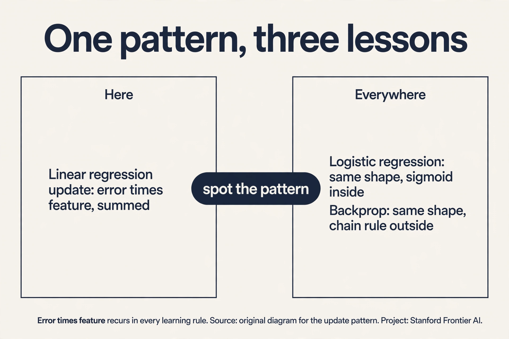
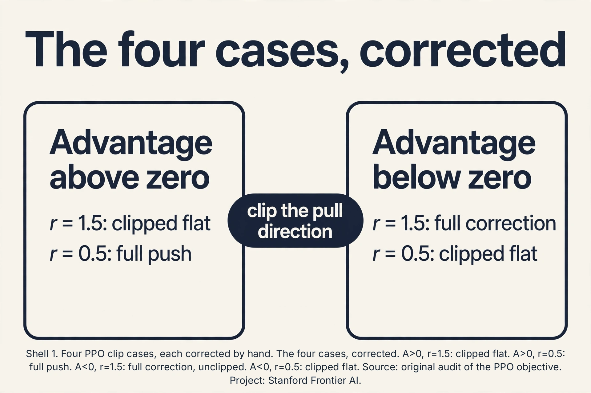
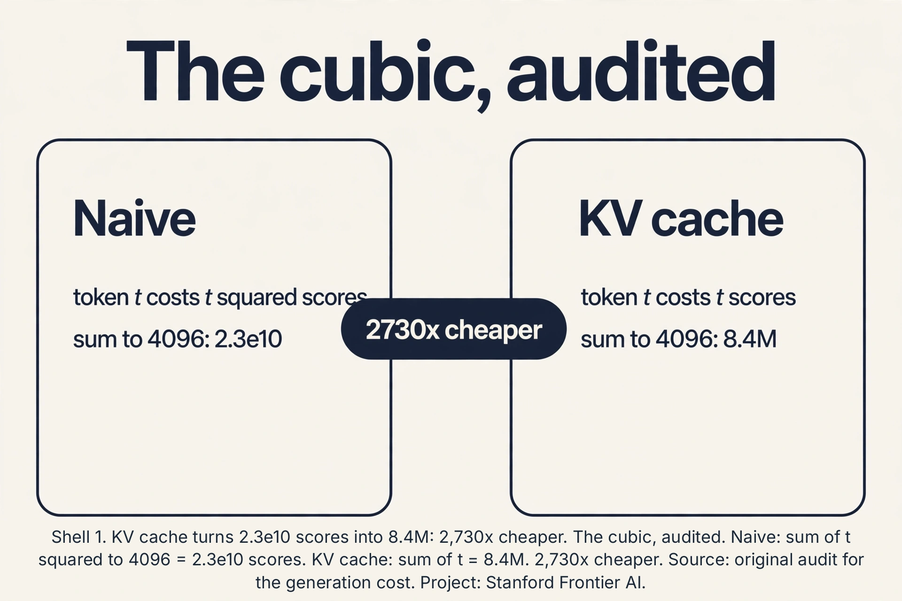

CS229 Crash Course
The story in 30 minutes
Machine learning is algorithms that improve from experience instead of hand-written rules. Mitchell’s test: performance P at tasks T must rise with experience E. Three setups: labeled pairs (supervised), raw data (unsupervised), actions and rewards (reinforcement). L01
Supervised learning has four characters: examples (x, y), hypothesis h_theta, parameters theta, and the loss chip J(theta) = 1/(2m) sum of squared errors. Minimize J and you learn. L02
Gradient descent walks downhill: theta_j := theta_j - alpha * gradient. One hand step on three houses cut J from 6.33 to 3.32. Alpha too small crawls. Too large diverges (4, -8, 16, -48). SGD uses one example per step: noisy, m times cheaper, the only option at internet scale. The normal equations jump to the exact answer in one shot: theta = (X^T X)^-1 X^T y, but cost O(n^3) and die on singular matrices. L02
Maximum likelihood is the bedrock: pick the knobs that make the data most probable. Gaussian noise turns MLE into least squares, so the squared loss was never arbitrary. For yes-or-no targets, the sigmoid squeezes scores into probabilities (0.12, 0.5, 0.88 at -2, 0, 2) and logistic regression classifies by MLE. Newton’s method jumps to each parabola’s bottom with no alpha to tune, at O(n d^2 + d^3) per step: wonderful at d=20, dead at d=1B. L03
One family unites them: the exponential family. The GLM recipe (pick distribution, eta = theta^T x, predict the mean) generates least squares and logistic regression as two settings. For k classes, softmax (e^z_j / sum e^z_c) with cross-entropy loss (-log p_true). Four whys: GLM-dictated, smooth, maximum-entropy, convenient. L04
The generative turn: model each class, not the boundary. GDA fits a Gaussian per class (MLE = class averages) and the shared covariance makes the boundary linear. Naive Bayes counts words for spam. Laplace smoothing (+1 to every count) stops unseen words from vetoing everything. L05
Bias (wrong assumptions) vs variance (noise sensitivity): test error = bias^2 + variance + noise. Double descent: past the interpolation peak, bigger models generalize again. Measure honestly: train fits, dev compares, test reports once. Ridge (loss + rho||theta||^2) shrinks wild knobs and always inverts. Hyperband kills bad hyperparameters cheap via successive halving. L06
GLMs cannot invent features like walkability. A neuron (sigma(w^T x + b)) learns one bent feature. ReLU (max(0,z)) is the default bend. The MLP stacks them into any shape. Residuals (out = x + F(x)) carry gradients through 100+ layers. L07
Backprop computes all gradients for the price of one forward pass: forward O(N) implies gradient O(N). The chain rule walks backward through modules, each with a forward and backward function. That theorem is why billion-parameter models train. L08
Unsupervised: k-means alternates assignment and mean updates, converging to a local minimum the seed decides; k-means++ seeds smartly (O(log k) guarantee). GMMs soften assignments into responsibilities. EM fits them: E-step (posterior weights), M-step (weighted averages), likelihood rising every round, via the ELBO from Jensen’s inequality. PCA keeps the top eigenvectors of the covariance: the axes of variation. L09 L10
Modern generative: diffusion destroys images with fixed noise, learns to reverse each step (ELBO becomes noise-prediction MSE), and samples from pure noise in T steps. Foundation models pre-train broad then adapt: linear probing tests representations, LoRA (W + AB, rank r) adapts with 256x fewer knobs. Contrastive learning pulls augmented views together without labels. hard negatives keep it honest. The embeddings power semantic search and RAG (knowledge in the store, not the weights). L11 L12 L13
The transformer predicts next tokens autoregressively. Attention (softmax(QK^T/sqrt(d))V) lets every token gather context directly: the toy gives weights [0.21, 0.21, 0.58]. The causal mask forbids peeking. Price: N^2 (16.7M scores at N=4,096). The KV cache cuts generation to O(t) per token but fills GPU memory. GQA and MoE diet it. In-context learning teaches tasks via prompt examples with frozen weights. SFT teaches the assistant’s job description. L14 L15
Reinforcement learning: the MDP (S, A, P, R, gamma), values via Bellman, and REINFORCE (grad E[R] = E[R grad log pi]): high variance, on-policy. PPO tames it: advantages (reward minus baseline) cut variance, clipping ([0.8, 1.2]) keeps updates proximal. RLVR trains reasoning on binary verifiable rewards: thinking improves because good thinking earns the 1s. L16 L17
Numbers to quote
- 3-house GD step: J 6.33 -> 3.32, alpha = 0.05.
- Alpha too large on theta^2: 4, -8, 16, -48. Diverges.
- Normal equations toy: best line 1/3 + 1.5x, J = 0.083, exact.
- Newton: O(n d^2 + d^3) per step. 408K ops at d=20. 10^27 at d=1B.
- Sigmoid: g(-2)=0.12, g(0)=0.5, g(2)=0.88.
- Softmax (2.0,1.0,0.5) -> (0.63,0.23,0.14). Loss 0.46 at 0.63.
- Attention toy: [1,1,2] -> [0.21,0.21,0.58] -> [0.79,0.79].
- N=4,096: 16.7M attention scores per layer per head.
- LoRA d=1000, r=10: 20K vs 1M dof. 50x cut.
- Backprop toy: dL/dW2 = [0,-3.75], dL/dW1 = [[0,0],[2.5,5]].
- 0.25^50 = 10^-30: vanishing through deep sigmoids.
- K-means++: O(log k) expected approximation ratio.
- ELBO toy: EM converges to mu = 0.33, 10.0.
- PCA toy: eigenvalues (5, 0): one axis keeps 100 percent.
- PPO clip: [0.8, 1.2]. Epsilon ~ 0.2.
Teaching figures: the four to stare at




Rapid-fire self-test (answers below)
- Write the loss chip and say why the 1/2 is there.
- Least squares is MLE under what noise?
- Alpha too large on theta^2 starting at 4: what sequence?
- Newton per-step cost, and the d where it dies.
- Sigmoid at -2, 0, 2.
- Name the four whys of softmax.
- GDA decision boundary: why linear?
- One unseen word, no Laplace: what happens to naive Bayes?
- Bias vs variance in one line each.
- Ridge: what does it fix that least squares cannot?
- Backprop’s one-line cost theorem.
- K-means: why do different seeds give different answers?
- EM: what rises every round, and what can still go wrong?
- PCA’s eigenvalues mean what?
- Diffusion training target in three words.
- LoRA: what is stored, what is merged?
- Attention toy [1,1,2]: weights and output.
- KV cache per token for a 7B fp16 model.
- ICL vs SFT: what changes, weights or prompt?
- REINFORCE gradient in one line.
- Advantage: definition and why unbiased.
- PPO: A = -2, r = 1.5, eps = 0.2: clipped or not?
- RLVR reward climbs, traces rot: name it and fix it.
Answers. 1. J = 1/(2m) sum (h-y)^2. The 1/2 cancels the derivative’s 2. 2. Gaussian noise. 3. 4, -8, 16, -48: diverges. 4. O(n d^2 + d^3). Dead near d = 1B. 5. 0.12, 0.5, 0.88. 6. GLM-dictated, smooth, maximum-entropy, numerically convenient. 7. Shared Sigma: the quadratic terms cancel, leaving w = Sigma^-1(mu_1 - mu_0). 8. Its zero probability vetoes the whole product: everything scores zero. 9. Bias: wrong assumptions. Variance: noise sensitivity. 10. Singular X^T X: (X^T X + rho I) always inverts. 11. Forward O(N) implies gradient O(N). 12. It converges to a local minimum. the seed picks which. 13. The likelihood (via the ELBO). local maxima, slow crawl, degenerate collapse. 14. Variance per principal axis. 15. Noise-prediction MSE. 16. Store tiny A, B. Merge W + AB at serve time: zero latency. 17. [0.21, 0.21, 0.58] -> [0.79, 0.79]. 18. 512 KB. 19. ICL: prompt only, weights frozen. SFT: weights change. 20. grad E[R] = E[R grad log pi]. 21. Reward-to-go minus baseline. Unbiased because E[baseline * score] = 0. 22. Unclipped: min(-3, -2.4) = -3, full corrective push. 23. Reward hacking: audit traces, strengthen the verifier.
Exam traps: never-confuse pairs
- MLE vs MAP: MAP adds the prior. Ridge is MAP with a Gaussian prior.
- V vs Q: V evaluates the state, Q chooses the action.
- ICL vs SFT vs RLVR: prompt frozen / weights on pairs / weights on verifiable reward.
- Ridge vs lasso: shrink-all vs zero-some.
- On-policy vs off-policy: REINFORCE needs fresh rollouts. PPO reuses via the ratio.
- Temperature (softmax) vs diffusion noise schedule: same word, unrelated dials.
- ELBO in EM vs ELBO in diffusion: same Jensen trick. EM bounds likelihood, diffusion becomes noise MSE.
Debugging rules: if this, then that
- Loss explodes: alpha down. Crawls: alpha up or scale features.
- d huge: SGD. Never Newton.
- Tune rho on dev, never on train.
- K-means unstable across seeds: k-means++ and restarts.
- Attention uniform: missing sqrt(d). Attention spiky: tau too low.
- PPO ratios spread out: fewer epochs, fresh rollouts.
- Serving OOM: it is the KV cache. GQA first, then batch, then context.
If you only remember seven sentences
- Minimize the loss chip. The gradient shape is error times feature.
- Least squares is MLE under Gaussian noise.
- Newton is O(n d^2 + d^3): stats loves it, deep learning buries it. SGD is the workhorse.
- Backprop: forward O(N) implies gradient O(N). That is why big models train.
- Attention is a Q/K/V lookup at O(N^2). The KV cache and GQA pay the serving bill.
- Pre-train broad, adapt cheap: probe, LoRA, SFT, then PPO on verifiable rewards.
- Every method has an honest price: name it before you trust it.